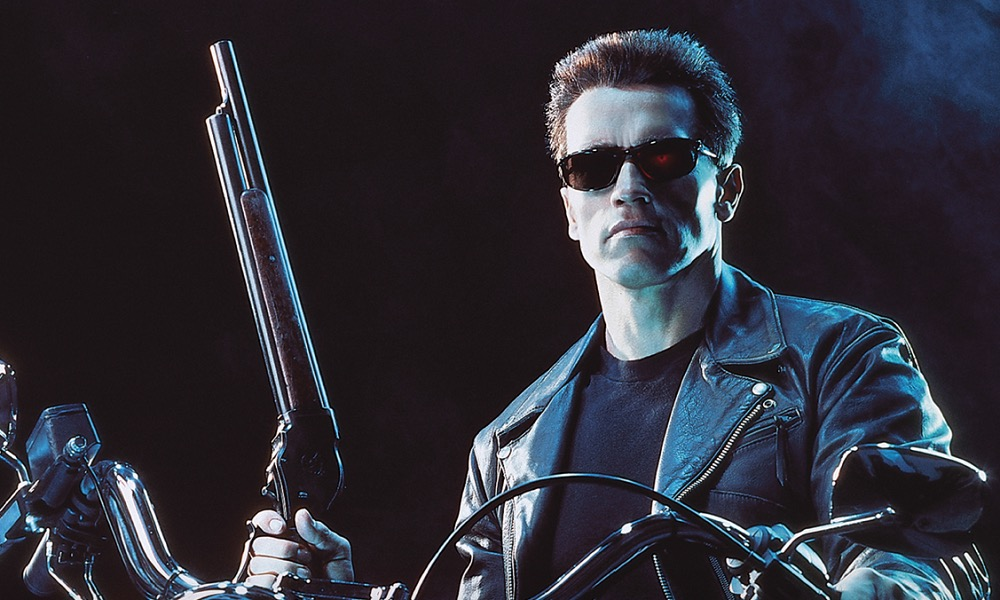
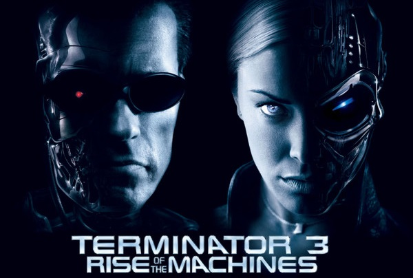

terminator
Terminator is an American media franchise created by James Cameron. The franchise encompasses a series of science fiction action films, comics, novels and additional media, concerning a total war between Skynet's synthetic intelligence – a self-aware military machine network – and John Connor's Resistance forces comprising the survivors of the human race. Skynet's most famous products in its genocidal goals are the various terminator models, such as the T-800, who was portrayed by Arnold Schwarzenegger from the original Terminator film in 1984. By 2010, the franchise had generated $3 billion in revenue.[4]

